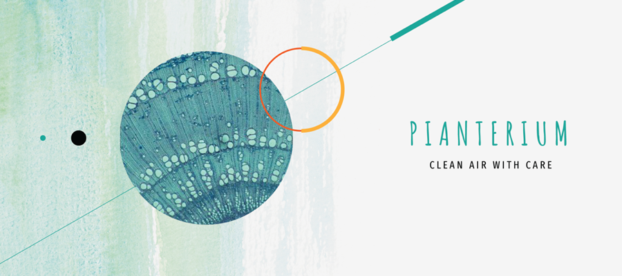
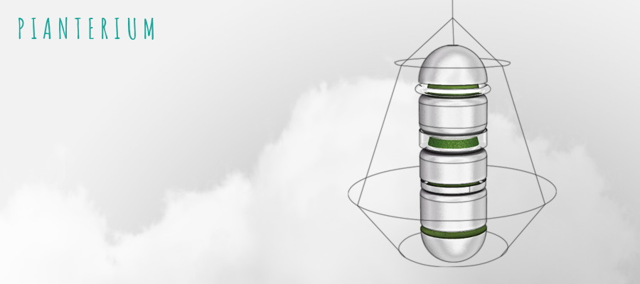
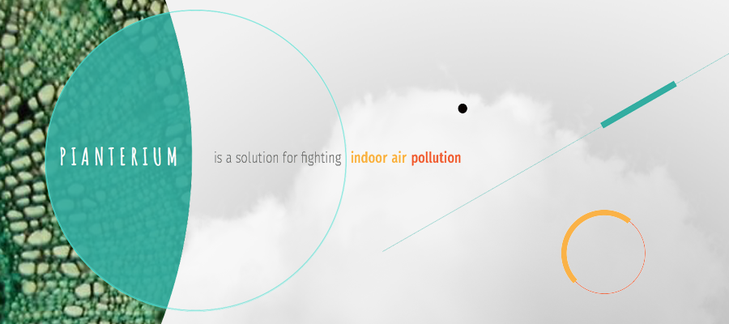
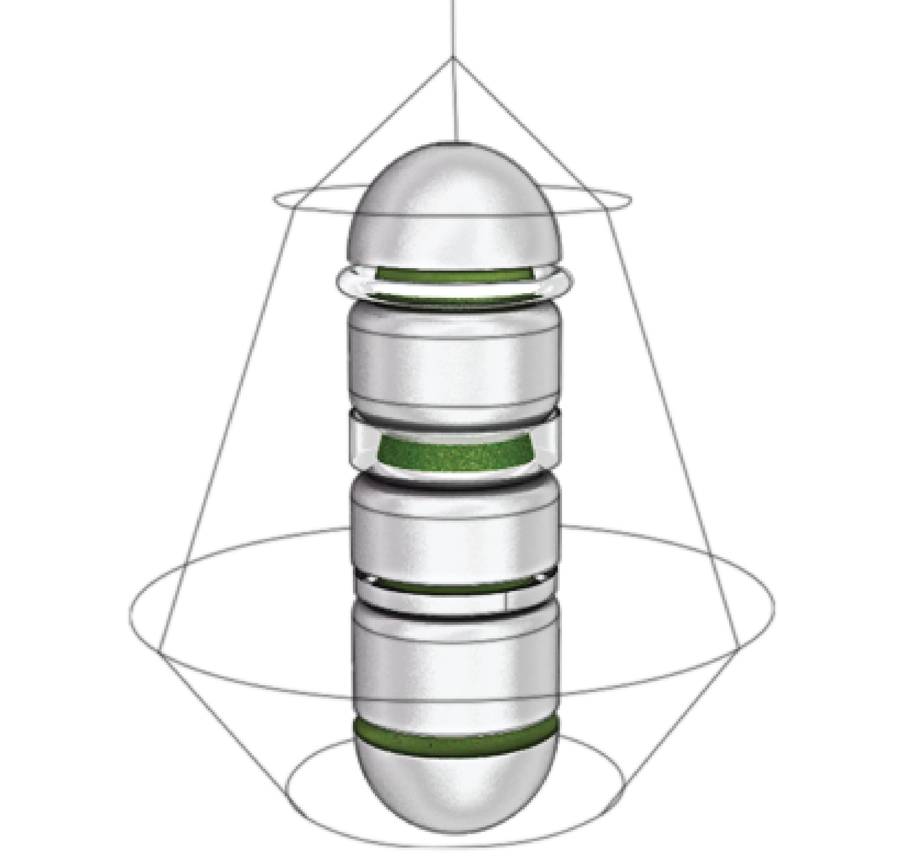
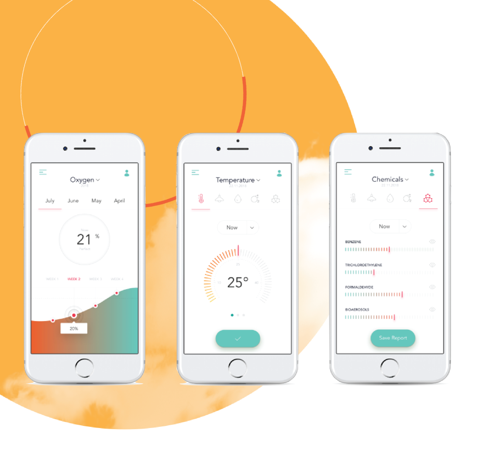
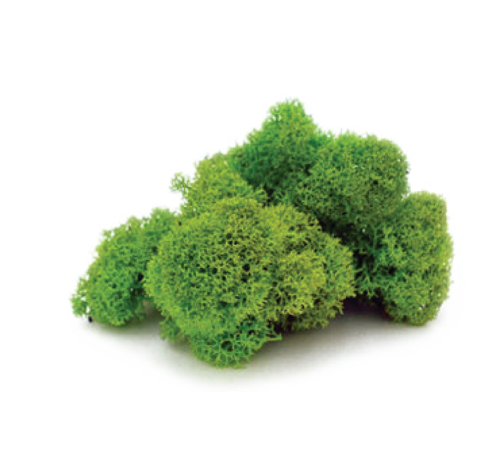

<!DOCTYPE html>
<html>
</html>
<head>
  <meta charset="utf-8">
  <meta http-equiv="X-UA-Compatible" content="IE=edge">
  <title>Iuliia Vorobiova- Portfolio</title>
  <meta name="description" content="">
  <meta name="viewport" content="width=device-width, initial-scale=1">
  <meta name="robots" content="all,follow">

  <!-- Bootstrap CSS-->
  <link rel="stylesheet" href="vendor/bootstrap/css/bootstrap.min.css">
  <!-- Font Awesome CSS-->
  <link rel="stylesheet" href="vendor/font-awesome/css/font-awesome.min.css">
  <!-- Google fonts - Roboto-->
  <link rel="stylesheet" href="https://fonts.googleapis.com/css?family=Roboto:400,300,700,400italic">
  <!-- owl carousel-->
  <link rel="stylesheet" href="vendor/owl.carousel/assets/owl.carousel.css">
  <link rel="stylesheet" href="vendor/owl.carousel/assets/owl.theme.default.css">


  
  <!-- theme stylesheet-->
  <link rel="stylesheet" href="css/style.blue.css" id="theme-stylesheet">
  <!-- Custom stylesheet - for your changes-->
  <link rel="stylesheet" href="css/custom.1.css">
  <!-- Favicon-->
  <link rel="shortcut icon" href="img/favicon.png">


  <link rel="stylesheet" href="css/slider2.css">

 
</head>
<body>
    <div id="all">
      <div class="container-fluid">
        <div class="row row-offcanvas row-offcanvas-left"> 
          <!--   *** SIDEBAR ***-->
          <div id="sidebar" class="col-md-4 col-lg-3 sidebar-offcanvas">
            <div class="sidebar-content">
              <h1 class="sidebar-heading"> <a href="index.html">Iuliia Vorobiova</a></h1>
              <p class="sidebar-p">Service Design and Research, UI/UX/Web Designer, Front end developer.</p>
          
            
              <ul class="sidebar-menu">
                  <!-- Link-->
                  <li class="sidebar-item"><a href="index.html" class="sidebar-link active">Home</a></li>
                  <!-- Link-->
                  <li class="sidebar-item"><a href="about.html" class="sidebar-link">About</a></li>
                  <!-- Link-->
                  <li class="sidebar-item"><a href="contact.html" class="sidebar-link">Get in touch</a></li>
              </ul>
              <p class="social"><a href="https://www.linkedin.com/in/iuliiavorobiova/" target="_blank"  data-animate-hover="pulse" class="external gplus"><i class="fa fa-linkedin"></i></a>
                <a href="https://www.facebook.com/juliya.vorobyova" target="_blank"  data-animate-hover="pulse" class="external facebook"><i class="fa fa-facebook"></i></a>
                <a href="https://www.instagram.com/sdrethink/"  target="_blank" title="" class="external instagram"><i class="fa fa-instagram"></i></a>
                <a href="mailto: iuliia.vorobiova@gmail.com" data-animate-hover="pulse" class="email"><i class="fa fa-envelope"></i></a></p>
              <div class="copyright text-center text-md-left">
                <p class="credit">&copy;2019 Iuliia Vorobiova </p>
                <!-- Please do not remove the backlink to us, unless you support the development at http://bootstrapious.com/donate. It is part of the license conditions. Thanks for understanding :)        -->
              </div>
            </div>
          </div>
        <!--   *** SIDEBAR END ***  -->
        <!--   *** DETAIL ***-->
        <div class="col-md-8 col-lg-9 content-column white-background">
          <div class="small-navbar d-flex d-md-none">
            <button type="button" data-toggle="offcanvas" class="btn btn-outline-primary"> <i class="fa fa-align-left mr-2"></i>Menu</button>
            <h1 class="small-navbar-heading"> <a href="index.html">Portfolio </a></h1>
          </div>
          <div class="row">
              <div class="col-xl-11">
                <div class="content-column-content">
                  <h1>Pianterium</h1>
                  <p class="lead">Is a smart system to operate as natural air purifiers. It uses different
                      types of moss to bind environmental toxins such as particulate matter and nitrogen oxides while producing oxygen.</p>

                      <div class = "notonmobile">
  <header>
  
    <div class="overlay "></div>
    <video playsinline="playsinline" autoplay="autoplay" muted="muted" loop="loop">
      <source src="./img/pianterim_video.mp4" type="video/mp4">
    </video>

  </header>
</div>


 <!-- 
                <div id="main-slider" class="owl-carousel owl-theme">
                  <div class="item"></div>
                  <div class="item"></div>
                  <div class="item"></div>
                </div>-->
                <!-- /#main-slider-->

                <section id="features" class="features bg-gray " style="padding-top:70px ; padding-bottom: 60px; ">
                    <div class="container">
                      <div class="row d-flex align-items-center">
                        <div class="text col-lg-6 order-2 order-lg-1">
                          
                         
                          
                          <h4>Pianterium </h4>
                          <p> 
                              Is a unique and creative way to liven up spaces
                              with greenery. Incorporating these biophilic elements
                              of design enhances wellness by improving air
                              quality and providing acoustic control.
              
              

                        </div>
                        <div class="image col-lg-6 order-1 order-lg-2"></div>
                      </div>
                      <div class="row d-flex align-items-center">
                        <div class="image col-lg-6"></div>
                        <div class="text col-lg-6">
                          
                          <h4>App</h4>
                          <p>
                              The App makes it easier to track
indoor air quality in real time, to compare changes
of pollutant levels at different time.<br>
Data that can be monitored: <br>
- the level of humidity<br>
- temperature<br>
- CO2 <br>
- airborne particles<br>
- organic compounds<br>
- the condition of the moss
                              </p>
                        </div>
                      </div>
                      <div class="row d-flex align-items-center">
                        <div class="text col-lg-6 order-2 order-lg-1">
                         
                          <h4>Why Moss?</h4>
                          <p>Chosen moss cultures have the ability to filter pollutants such
                              as particulate matter out of the air by binding them to their
                              leaf surface and integrating them permanently into their own
                              biomass.
                            
                        
                        
                          </div>
                        <div class="image col-lg-6 order-1 order-lg-2"></div>
                      </div>
                    </div>
                  </section>

                <ol>
                  <li>SHEET MOSS (HYPNUM)<br> Has come to be recognised
                    as a botanical preference
                    with good antibacterial
                    properties.</li>
                  <li>SPHAGNUM GIRGENSOHNII <br>
                      High antiseptic qualities
                      making air around it
                      extremely healthful.</li>
                </ol>
                <blockquote class="blockquote">
                  <p class="mb-0">Compared to plants moss has no need for watering
                      or trimming. Built-in irrigation system allows moss to be
                      kept moisturized so that it maintains its appearance
                      and filtering capabilities.</p>
                </blockquote>
                <h2>Advantages</h2>
                
                <p>The air purification technologies can be grouped into
                    two categories: physical absorption and chemical
                    decomposition which is used to address specific
                    pollutants and customer concerns. The former
                    the category was more often used by competitors in
                    high-end segments and advertised as producing
                    no secondary pollution, but could be ineffective in
                    filtering out bacteria. Advantages of the Pianterium solution
                    are summarised in efficiency range against different
                    kind of air pollutants.</p>
                    

                    <div id="main-slider" class="owl-carousel owl-theme">
                        <div class="item"></div>
                        <div class="item"></div>
                        <div class="item"></div>
                    </div>

                   
                <p><b>Less pollution in an indoor environment:</b></p>
               
                  
                        <p>
                 Pianterium occupies 99% less space than the
                      2.3 trees needed to purify the same air
                      quantity in space. <br>
                  
            
                      Can absorb 2.1gr of
                      particulate matter a day and remove
                      2tons of CO2 a year.</p>  
              <br>
                <p><b>Better work environment:</b></p>
            
                    <p>

                Researchers from Washington State
                      University have found that bringing
                      some flora into the workplace, apart
                      from oxygenating the air, can also
                      improve employee satisfaction and
                      increase productivity by up to 15%.</p>
                


                      <h4>Project</h4>
                
                      <p>Politecnico di Milano <br>
                        Final Synthesis Design Studio <br>
                        Topic: Entrepreneurship
                        as science of
                        «effectuation»<br>
                 
                        prof. arch. Fabrizio M. Pierandrei - prof. Jonathan Edelman
prof. Davide Fassi - prof. Elena Perondi <br>
                         
                      </p>

<br>
                      <h4>Other projects</h4>

                      <div class="top-content">
                          <div class="container-fluid" style="padding:0px">
                              <div id="carousel-example" class="carousel slide" data-ride="carousel">
                                  <div class="carousel-inner row w-100 mx-auto" role="listbox">
                                      <div class="carousel-item col-12 col-sm-6 col-md-4 col-lg-3 active">
                                          
                                          <div class="box-masonry item-content"> <a href="detail.html" title=""
                                            class="box-masonry-image with-hover-overlay"></a>
                                          <div class="box-masonry-hover-text-header">
                    
                                            <a href="detail.html" class="tile-link"></a>
                                            <a href="detail.html" class="tile-link"> </a>
                                            <h4>Intrace</h4>
                                            <div class="box-masonry-desription">
                                              <p> INTRACE enables all stakeholders across the supply chain to
                                                access up-to-date information about the lifecycle of a garment
                                                and its environmental impact, thereby helping them make
                                                data-driven decisions and close the loop. </p>
                                            </div>
                                          </div>
                                        </div>

                                      </div>
                                      <div class="carousel-item col-12 col-sm-6 col-md-4 col-lg-3">
                                          
                                          <div class="box-masonry"> <a href="project2.html" title=""
                                            class="box-masonry-image with-hover-overlay"></a>
                                          <div class="box-masonry-hover-text-header">
                    
                                            <a href="project2.html" class="tile-link"></a>
                                            <h4>Pianterium</h4>
                                            <div class="box-masonry-desription">
                                              <p>Is a smart system to operate as natural air purifiers. It uses
                                                different types of moss to bind environmental toxins such as
                                                particulate matter and nitrogen oxides while producing oxygen.
                                              </p>
                                            </div>
                                          </div>
                                        </div>
                                        
                                      </div>
                                      <div class="carousel-item col-12 col-sm-6 col-md-4 col-lg-3">
                                          
                                          <div class="box-masonry"> <a href="project5.html" title=""
                                            class="box-masonry-image with-hover-overlay"></a>
                                          <div class="box-masonry-hover-text-header">
                                            <a href="project5.html" class="tile-link"></a>
                                            <h4> Meridiana</h4>
                                            <div class="box-masonry-desription">
                                              <p> Is the unique platform of emerging technologies to transform and
                                                revitalize cultural heritage where the ICT market, cultural
                                                heritage institution and young creators achieve mutual benefits.
                    
                                              </p>
                                            </div>
                                          </div>
                                        </div>
                                      </div>
                                      <div class="carousel-item col-12 col-sm-6 col-md-4 col-lg-3">
                                          
                                          <div class="box-masonry"> <a href="./project3.html" title=""
                                            class="box-masonry-image with-hover-overlay"></a>
                                          <div class="box-masonry-hover-text-header"> <a href="./project3.html"
                                              class="tile-link"> </a>
                                            <h4>ServDes. </h4>
                                            <div class="box-masonry-desription">
                                              <p>How does Service design impacts system relations.</p>
                                            </div>
                                          </div>
                                        </div>

                                      </div>
                                      
                                     
                                      <div class="carousel-item col-12 col-sm-6 col-md-4 col-lg-3">
                                          <div class="box-masonry"> <a href="project6.html" title=""
                                            class="box-masonry-image with-hover-overlay"></a>
                                          <div class="box-masonry-hover-text-header"> <a href="project6.html"
                                              class="tile-link"> </a>
                                            <h4>CANactions School</h4>
                                            <div class="box-masonry-desription">
                                              <p>Do (post)industrial cities of Ukraine have a future?</p>
                                            </div>
                                          </div>
                                        </div>
                                      </div>
                                      <div class="carousel-item col-12 col-sm-6 col-md-4 col-lg-3">
                                          
                                          <div class="box-masonry"> <a href="project7.html" title=""
                                            class="box-masonry-image with-hover-overlay"></a>
                                          <div class="box-masonry-hover-text-header"> <a href="project7.html"
                                              class="tile-link"></a>
                                            <h4> Bigggg Idea</a></h4>
                                            <div class="box-masonry-desription">
                                              <p>Social Innovation Digital Platform.</p>
                                            </div>
                                          </div>
                                        </div>
                                      </div>
                                      <div class="carousel-item col-12 col-sm-6 col-md-4 col-lg-3">
                                          <div class="box-masonry"> <a href="project4.html" title=""
                                            class="box-masonry-image with-hover-overlay"></a>
                                          <div class="box-masonry-hover-text-header"> <a href="project4.html"
                                              class="tile-link"></a>
                                            <h4> illy a casa</a></h4>
                                            <div class="box-masonry-desription">
                                              <p>To make illy stand out among its competitors in Europe by promoting SMS Coffee Home Delivery service and improving the quality of technical support experience with its customers. </p>
                                            </div>
                                          </div>
                                        </div>
                                      </div>
                                      <div class="carousel-item col-12 col-sm-6 col-md-4 col-lg-3">
                                          <div class="box-masonry"> <a href="detail.html" title=""
                                            class="box-masonry-image with-hover-overlay"></a>
                                          <div class="box-masonry-hover-text-header"> <a href="project8.html"
                                              class="tile-link"> </a>
                                            <h4>Mask - Media Invisible layer</h4>
                                            <div class="box-masonry-desription">
                                              <p>The media produces a lot of informatio which is difficult to
                                                control. Is like an invisible spider’s web around your face. The
                                                more you consume information the more you lose the acuity of the
                                                perception.</p>
                                            </div>
                                          </div>
                                        </div>
                                      </div>
                                  </div>
                                  <a class="carousel-control-prev" href="#carousel-example" role="button" data-slide="prev">
                                      <span class="carousel-control-prev-icon" aria-hidden="true"></span>
                                      <span class="sr-only">Previous</span>
                                  </a>
                                  <a class="carousel-control-next" href="#carousel-example" role="button" data-slide="next">
                                      <span class="carousel-control-next-icon" aria-hidden="true"></span>
                                      <span class="sr-only">Next</span>
                                  </a>
                              </div>
                          </div>
                      </div>


                          
               
              </div>
            </div>
          </div>
        </div>
      </div>
    </div>
  </div>
  <!-- JavaScript files-->
  <script src="vendor/jquery/jquery.min.js"></script>
  <script src="vendor/popper.js/umd/popper.min.js"> </script>
  <script src="vendor/bootstrap/js/bootstrap.min.js"></script>
  <script src="vendor/jquery.cookie/jquery.cookie.js"> </script>
  <script src="vendor/owl.carousel/owl.carousel.min.js"></script>
  <script src="vendor/masonry-layout/masonry.pkgd.min.js"></script>
  <script src="js/front.js"></script>


  <!-- JavaScript slider-->
  
		<script src="assets/js/jquery-migrate-3.0.0.min.js"></script>
		<script src="https://cdnjs.cloudflare.com/ajax/libs/popper.js/1.14.6/umd/popper.min.js" integrity="sha384-wHAiFfRlMFy6i5SRaxvfOCifBUQy1xHdJ/yoi7FRNXMRBu5WHdZYu1hA6ZOblgut" crossorigin="anonymous"></script>
		<script src="https://stackpath.bootstrapcdn.com/bootstrap/4.2.1/js/bootstrap.min.js" integrity="sha384-B0UglyR+jN6CkvvICOB2joaf5I4l3gm9GU6Hc1og6Ls7i6U/mkkaduKaBhlAXv9k" crossorigin="anonymous"></script>
    <script src="assets/js/jquery.backstretch.min.js"></script>
    <script src="assets/js/wow.min.js"></script>
    <script src="assets/js/scripts.js"></script>

</body>